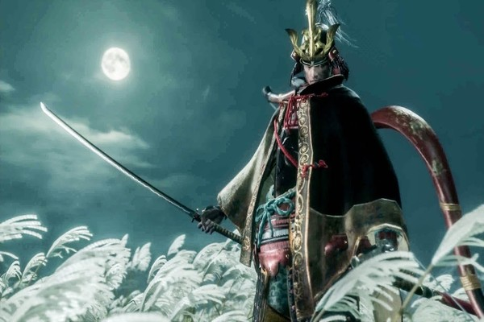
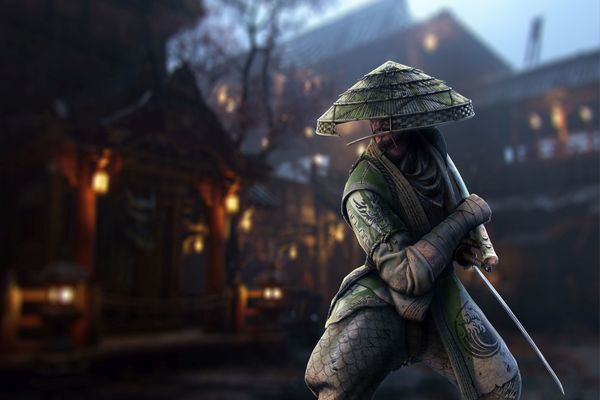
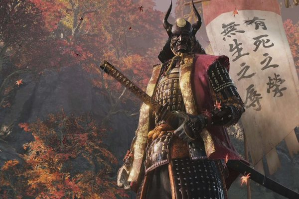
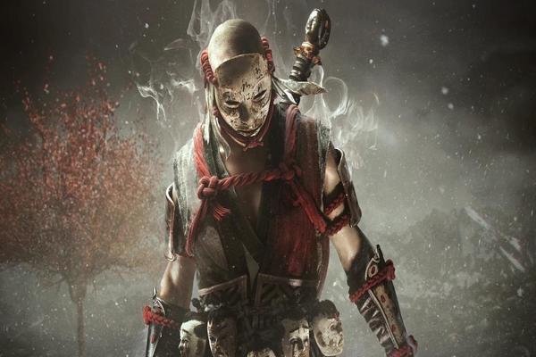
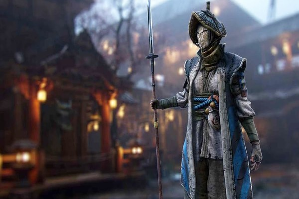
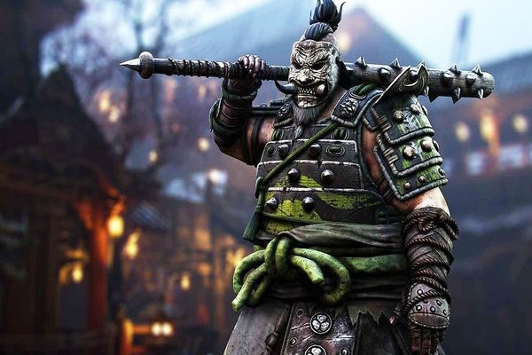
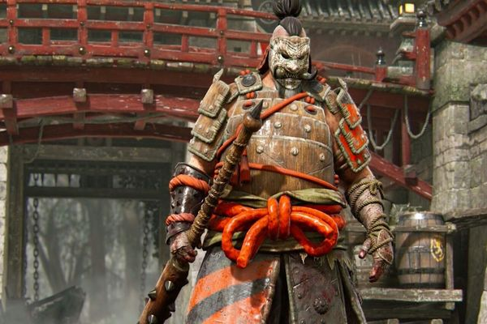
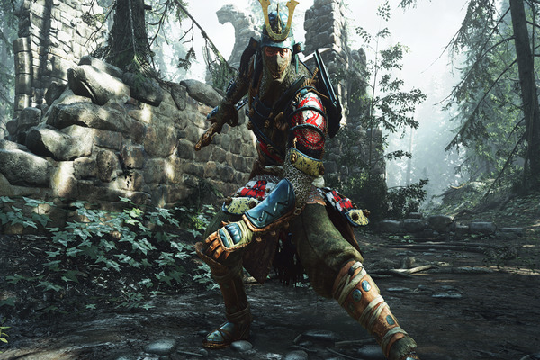

Background Story : The Former Military General that serve local Daimyo in Hokkaido Island. Have a good battle skills, specially in one on one short blade combat.

Juzou Kanagawa
Background Story : He is the one of the Royal Family of the Japaneese Empire. He became a warrior cause he like to kill and murdered people. A talented samurai with his blade "Yamato"

Isshin Kiyoshi
Background Story : Former local Criminal that recruited by Daimyo Naruhito near Kyoto. Has the combat ability, especially speed and agility. Use small hidden blade that used in stealth mission.

Kuranosuke Matsumoto
Background Story : A Talented Rōnin (浪人), who lost his master when his territory was attacked by the military Daimyo from Kyoto. He is well known as the "Lone Wolf". Very talented in close ranged battle.

Kanjurou Kitamura
Background Story : A Very Dangerous Shinobi(忍者) who really skilled in stealth mission to kill in silence. He also skilled in spying, and can use many ninjutsu specially for escape after killing his target.

Tenzen Kawarada
Background Story : An Orphan Child who have no one in his side. He grew up and become a Cruel and Bloodthirsty Shinobi(忍者) that will do anything for Money. He is a very Talented Mercenaries in Kyoto.

Shigenori Yamauchi
Background Story : A Mysterious Military General. No one knows where he came from, where he grew up, and get military training. Very Talented using a Heavy Weapon, specially Iron Mace.

Jinsuke Saze
Background Story : A Former Sushi Maker from Nagoya. His wife and daughter were killed by shinobi who sneaks into his house at night. After that incident, He intended to kill every shinobi he met and cut their
head with his blade.

Ujinari Mizuo
Background Story : Son of an Expert Samurai from Nagano. He was trained since he was 5 years old to become a samurai. A Samurai(武士) who has high self-esteem and really likes Sake.